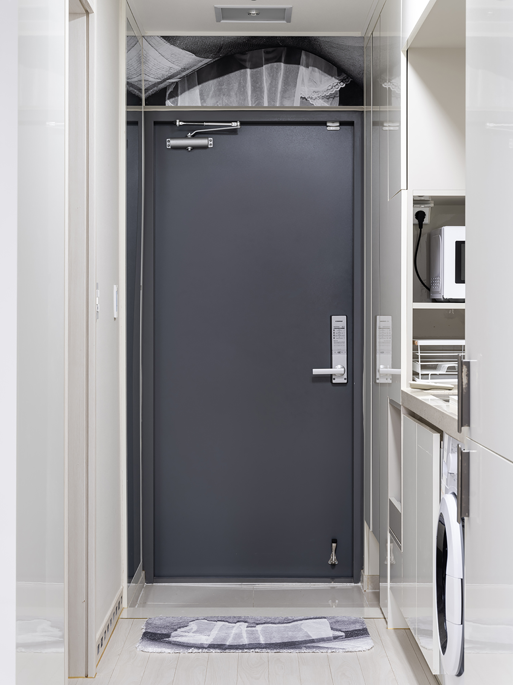
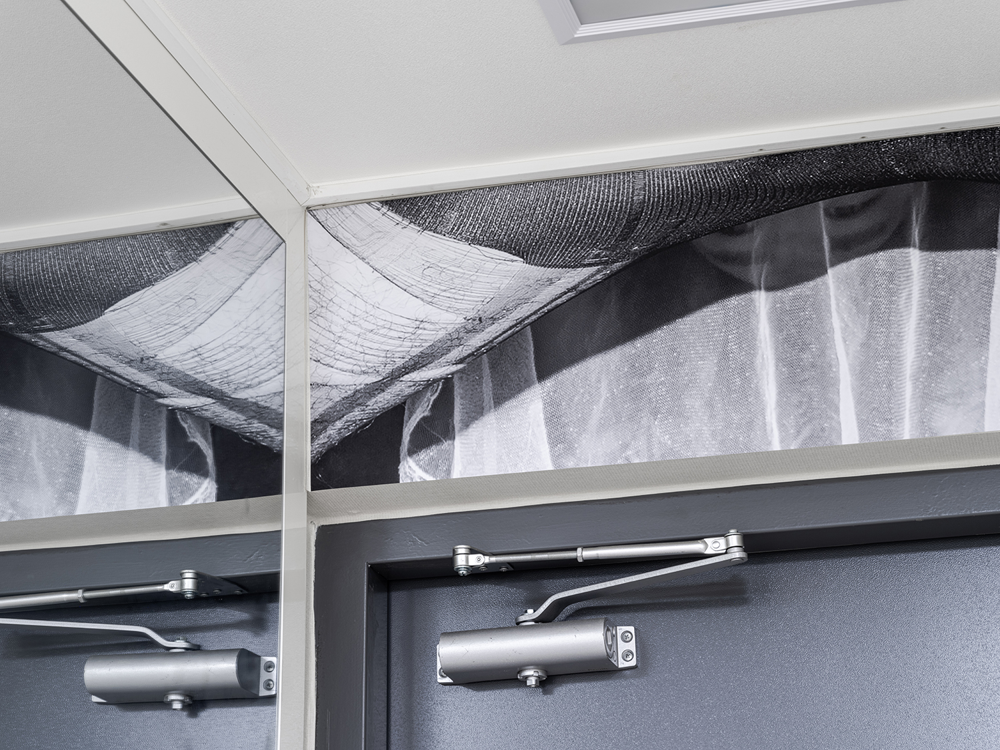
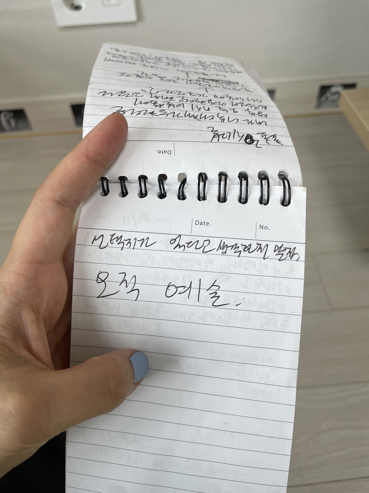

<거꾸로 뜨는 눈>과 작가라는 직업
<
안초롱: 그리고 전시의 리플렛에 있던 작품 설명 글 직접 쓰신 거죠? 수사가 많이 붙은 편이더라고요. <수염 드로잉>과 <오래된 방은 궁전>, <대기 시간>은 아까 재훈 씨가 초등학교 친구한테 팩트 폭력으로 상처 준 것처럼 객관적으로 쓰셨는데 나머지는 좀 더 자신의 감상이 많이 들어가 있었어요. ‘엉덩이가 얼굴이듯 걷고 있는 그것은’(<끝없이 걷는 날>)이나 ‘누군가가 시체처럼 축 늘어져 있다.’(<무제>) 이런 부분들이 사실은 작가가 자신의 감상을 써놓은 부분이잖아요. 근데 그 정도가 약간 과하다. 없어도 되는데 굳이 넣어서 해석을 닫히게 만들 수 있겠다는 생각, 관객에 따라 다르게 해석할 수 있으니까요. 그런 게 조금 아쉬웠다.
오히려 ‘수염을 선재 삼아 그린 한 장의 그림과 바닥이다.’(<수염 드로잉>) 라고 하면 “그렇구나, 왜 수염을 썼지? 왜 바닥에 붙였지?” 이런 추측을 할 텐데 앞서 말한 글들은 생각을 닫히게 만든 듯해요. ‘하얀색 실루엣 너머로 숨은 눈동자가 어디를 바라보는지 쉽게 알아볼 수 없다.’(<거꾸로 뜨는 눈>)
나를 보고 있던데? (웃음)
 
평소에 메모 모아놓는 일은 정말 잘하시는 것 같아요. 가끔 들여다보세요?
재훈: 하나도 안 봐요.
안초롱: 가끔 보세요. 저는 이런 거 너무 귀여운 것 같아요.

재훈: 감성이 메마를 때 봐야겠네요..
안초롱: 초심 찾아야할 때 보면 되죠. 뭐랄까, 저는 《모텔전》 리뷰에서 작가의 성공에 관해 인용하신 부분, 동의 못 했거든요. 젊은 작가가 아티스트 런 스페이스에서 데뷔한 뒤 대안 공간, 갤러리를 거쳐 미술관에서 전시하며 커리어를 쌓고 그 후로는 - 마치 결승선처럼 - 비엔날레에 참여하는 이 순서요.
재훈: 왜 동의 안 하셨어요?
안초롱: 저 완전 비동의죠. 그렇게 하려면 예술 왜 해요? 예술 할 이유가 없지, 그러면 그냥 회사 다녀야지. 저는 그런 테크트리[2] 따라서 하는 예술은 그냥 예술이 아니라고 생각해요. 재훈 씨, 메모에서 ‘오직 예술’이래매, 그럼 그런 생각 하면 안 되지. 만약에 선생이 그렇게 얘기했다면 그 선생은 잘못 가르치고 있다고 생각해요.
성공이라는 관념 자체가 각자에게 모두 다르지만 예술가로서 성공하기 위해서는 자기가 누구인지 끊임없이 살펴보고, 궁극적으로 어떤 이야기를 하고 싶은지 들여다봐야 한다고 생각해요. 결국에는 나중에 회고전을 했을 때 보는 사람들에게 정말 감동을 주는 좋은 작업을 해야 하지 않나? 살면서 진짜 그런 작업해 보고 싶지 않아요? 그런 게 진짜 성공 아니냐는 생각을 했죠. 성공에 관한 그 선생의 말은 정말 잘못된 생각이라고 얘기해 주고 싶었어요. 그 선생의 목을 베러 가자.
그래서 또 궁금한 게... (웃음)
재훈: 방금 말씀하신 이야기에 좀 머물다 가죠.
안초롱: 네.
저는 작가가 진짜 좋은 직업이라고 생각해요. 좋은 신분, 좋은 직업. 왜냐하면 우리는 평생 자기 자신을 모르다가 죽잖아요, 근데 예술가란 직업은 내가 누구인지에 대한 철학적인 탐구를 시각 예술을 통해 계속하는 것이죠. 그게 되게 행운 아닌가? 다른 사람들은 바빠서 그럴 생각할 시간이 없잖아요.
재훈: 그렇죠. 요즘 사람들 정말 너무 바쁘죠. 혹시 초롱 씨는 최근에 작업을 보고 감동받았던 적이 있었나요?
안초롱: 얼마 전에 몬트리올에 있는 레지던시에 잠깐 갔다 왔어요. 거기서 사진하는 친구들 중 하나가 자기 스승이 지금 회고전 하는데 재밌으니까 한번 보라고 하는 거예요. 일단 그 선생님은 퀴어이자 게이 작가고 평생 자기 정체성과 섹슈얼리티를 가지고 고민한 사람이었어요. 근데 작품마다 형식이 다 달라요. 사진 외길 인생을 걸으면서 이거저거 다 해본 거죠.
(당연한 말이지만) 좋은 작품도 있었지만 안 좋은 작품들도 있었어요. 사람이 계속 좋은 것만 할 수는 없으니까. 그런데 그것들이 한자리에 모여있다는 점이 좋았어요. 평생 같은 이야기를 하는데, 이렇게도 해보고 저렇게도 해본 뒤 그걸 잘 정리해서 보여주는 게 아주 멋있었어요.
어느 시기의 작업이 후지다고 해서 그 사람의 모든 작업이 후진 게 아니잖아요. 겉보기엔 후질지 몰라도 그 작업을 만드는 시간이 본인에게 있어서 반드시 필요했을 지도 모르고, 그런 게 있어야 다음 작업도 할 수 있으니까요.
재훈: 네, 시간이 흐르는 게 필요하겠네요.
안초롱: 그렇죠, 자연스럽게 그럴 거예요. (재훈 씨도) 미술 애호가시니까 계속하겠죠.
- 안초롱: "테크트리"는 주로 비디오 게임에서 사용되는 용어로, 특정 기술이나 능력을 획득하기 위한 경로를 나타냅니다. 보통 게임에서는 플레이어가 특정 조건을 만족시키거나 자원을 투자해서 새로운 기술이나 아이템을 얻을 수 있는데, 이때 그 기술이나 아이템이 발전하는 순서를 "테크트리"라고 부릅니다. - ChatGPT